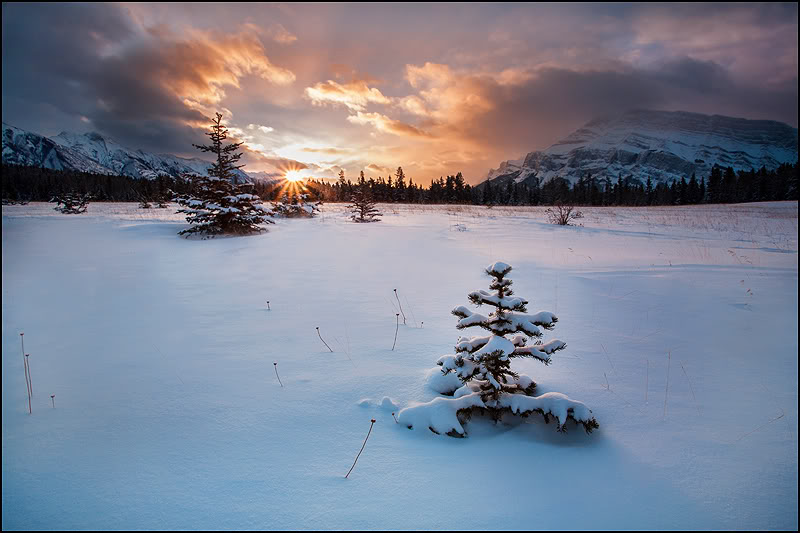
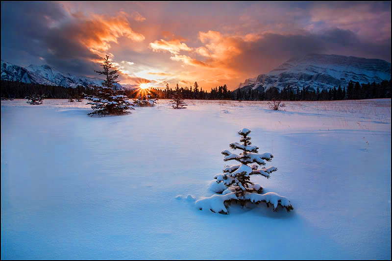

Current Work
Snow Tundra "Before"
This is how my picture above looked before I edited it.
After
This project was to make suttle changes to an environment not too drastic but just enough to improve it by a little. I used some saturation filter on this and made the sunset a little bit brighter. I also made the snow a little more apealing by making it pop out more. I took away the hay around tree to make the tree stand out more. The reason why i selected this environment to change it was because it made me feel emotion by looking at it. It made me feel at peace and the tree was a thing of beauty like out of all the trees in the world this was the best out of all of them. If I was making a game set in a snow environment I would make sure to include all the elements of this picture. This picture also reminds me of some of the art elements implemented in the game "The Last of Us" when it became winter and Ellie had to go hunting for a dear in that ice cold environment. This game had some of the best art I have ever seen, that is the level of art I would like to see in one of my games one day.
Photoshop Creation

This project was to make a advertisement design for example a movie poster. I like action movies so I tried to make an action type of design wich also gave me a great game idea. But first how I made this design was first takign a picture of my self as you can see. Then I took Iron mans helmet and boots then put them proportionate to my body size. Then I went on google to find the perfect dragon this was the hardest part trying to find a dragon that kind of matched the environment I was using. I settled on this dragon thats on the top right of the picture. This dragon came from "Skyrim" It wasn't the type I was looking for but it was close enough the fire it was breathing is what made me decide on it. The Title of this movie I thought of was "The adventures of Iron Kid The Dragon Slayer". The story I wanted to write for this is set in a steam punk world which is kidn of the last place you would see dragons still alive but I like mixing things together. It follows a boy named Rex he was a great invintor ever since he could hold a wrench. He heard rumors and legends that Dragons of old would come back from deep within earth to conquer over humans. His parents told him not to believe in such fairy tales, but he did he started of thinking of ways to defeat dragons if such a tiem came. One day he felt an earth quake one of which he has never felt he looked outside and saw not one but many Dragons terrorizing the city. His designs up to now has all failed and he has not thought of any new ideas for a design. Until he looked over to where his dads study was and saw a knights armour. Then he realised that was the best design armour made out of iron just like how people back in the midievil days fought dragons, hee started working on it immiedeatly. That is how Rex came to be Iron Kid the Dragon Slayer.